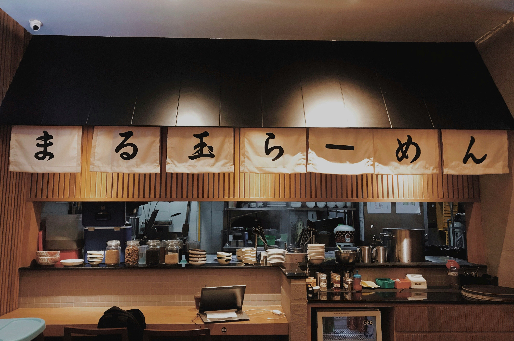

Nossa História
HIKARI
Fundado em 2025, o Hikari nasceu para compartilhar a autêntica cultura japonesa com um toque moderno. Nossa missão é oferecer experiência, sabor e hospitalidade inspirados na tradição, mas abertos ao novo.
Mais do que um restaurante, somos um convite para uma viagem ao Japão, unindo ingredientes frescos, ambiente acolhedor e atendimento atencioso. Valorizamos a simplicidade e o respeito às estações do ano em nossos pratos.
Seja para um jantar especial, uma refeição em família ou um encontro entre amigos, sinta-se em casa. Bem-vindo ao Hikari!